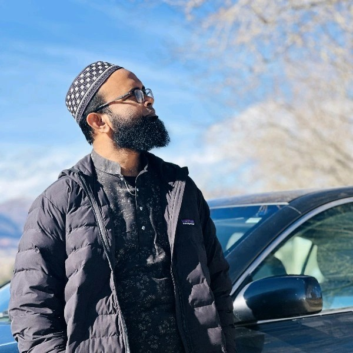

Amanul Islam
PhD Student in Security
University of Colorado Colorado Springs, USA
aislam2@uccs.edu
I am a dedicated researcher, academic, and software engineer with a strong background in computer science, cybersecurity, and machine learning. Hailing from Munshigonj, Bangladesh, I am currently pursuing a PhD in Security at the University of Colorado Colorado Springs, USA. My research focuses on advanced topics such as anomaly detection in 5G/6G networks using Variational Autoencoders (VAE) and anonymous networking detection in cryptocurrency. My research interests span machine learning, deep learning, cybersecurity, graphical authentication, and network security.
My research interests include:
- Machine Learning
- Deep Learning
- Cybersecurity
- Graphical Authentication
- Network Security
News
October 7, 2024